本文看点
01
10个方向全部有获奖
02
Agent安全仅1篇获奖
03
12篇在拆已有防御假设
01
LIST INFO
本期说明
【会议】ACM CCS 2026，第 33 届 ACM 计算机与通信安全会议，2026 年 11 月 15 日至 19 日，荷兰海牙
【奖项】Distinguished Paper Award（杰出论文奖），11 月 17 日晚宴上颁出，共 23 篇
【来源】获奖名单以颁奖现场幻灯片为准；每篇的题头截图、作者与单位取自 ACM 论文集中的正式版论文
【口径】每篇的介绍依据论文摘要与正文写成，数字均为论文原文给出的结果
CCS 的杰出论文按方向评选，今年 10 个方向都有获奖，篇数从 1 篇到 4 篇不等。下面先放颁奖现场公布名单的全部幻灯片，再按现场公布的方向顺序逐篇介绍，每篇先放论文题头，再说它做了什么。
赶时间的话，可以先看这几篇：做 Agent 的看 MetaMancer（篡改工具描述让 Agent 选中恶意工具）；做网络基础设施的看 Good Cache, BAD Cache（DNSSEC 反而成了投毒入口）；做系统安全的看 MTEscape 和 Hello Again；关心实证研究的看勒索软件谈判那篇，数据来自警方真实案件。
02
AWARDS
颁奖现场
11 月 17 日晚的颁奖晚宴上，大会按方向逐页公布了获奖名单，以下 6 张为现场拍摄，按公布顺序排列。每页后半部分颜色较浅的方向，是下一个即将揭晓的方向，名单同样完整。
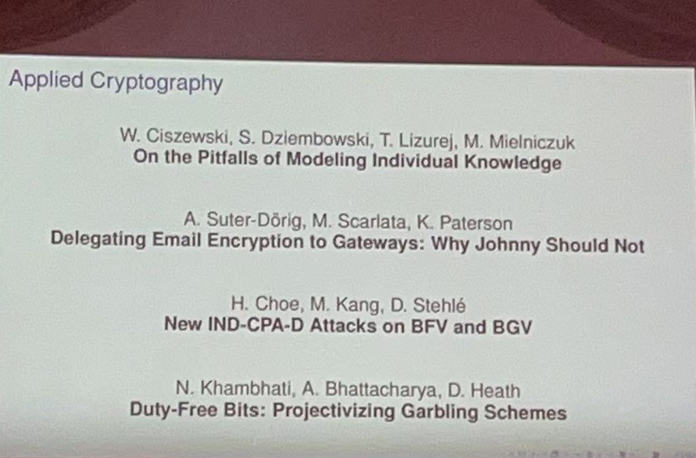
— 应用密码学（4 篇）
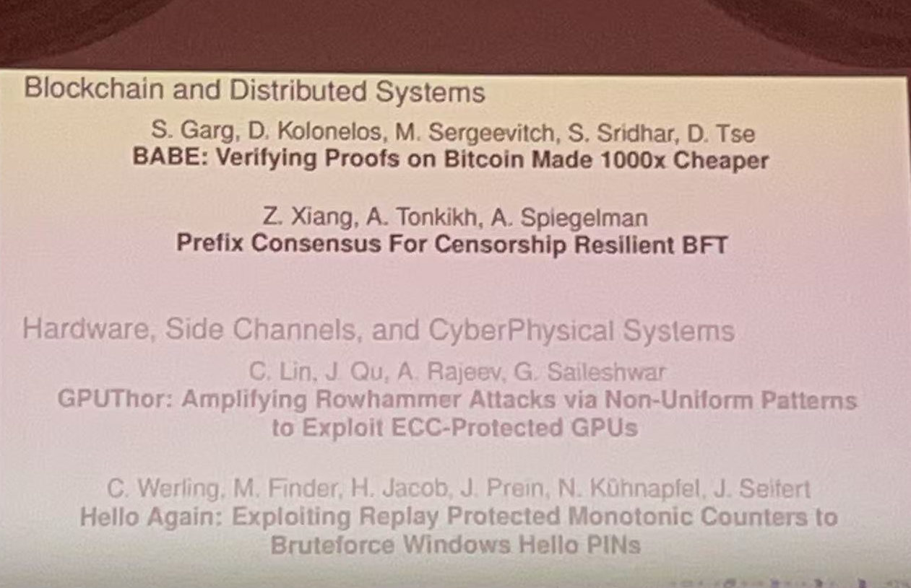
— 区块链与分布式系统（2 篇）；硬件、侧信道与信息物理系统（2 篇）
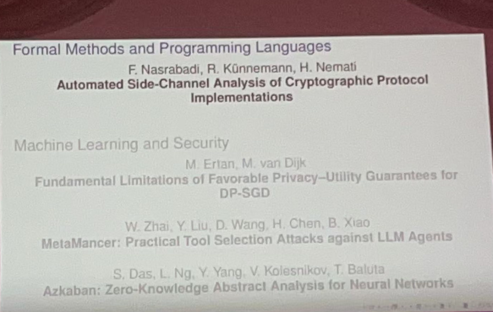
— 形式化方法与编程语言（1 篇）；机器学习与安全（3 篇）
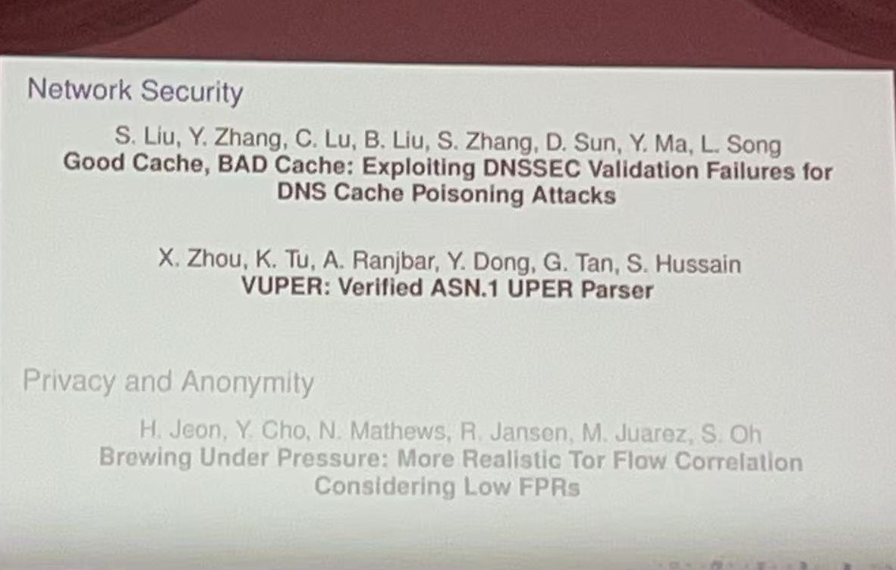
— 网络安全（2 篇）；隐私与匿名（1 篇）
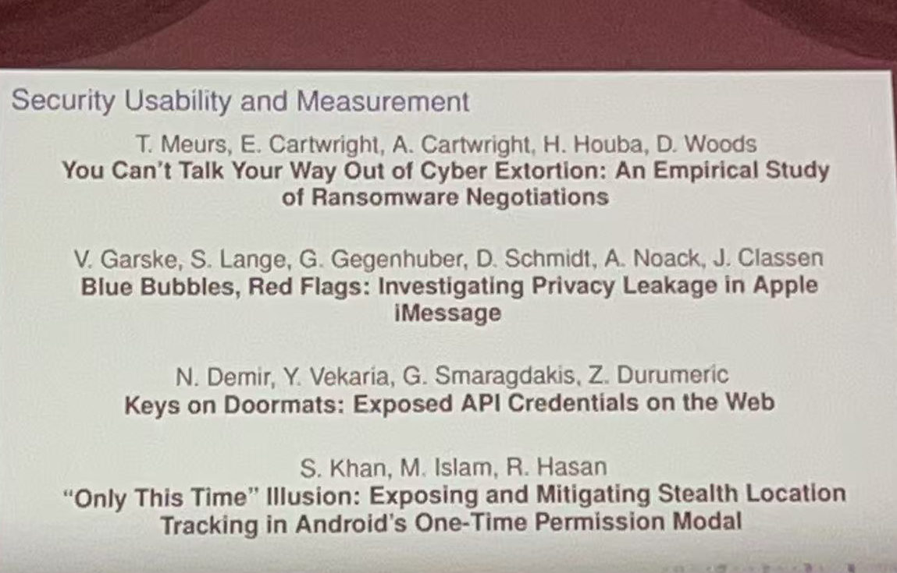
— 安全可用性与测量（4 篇）
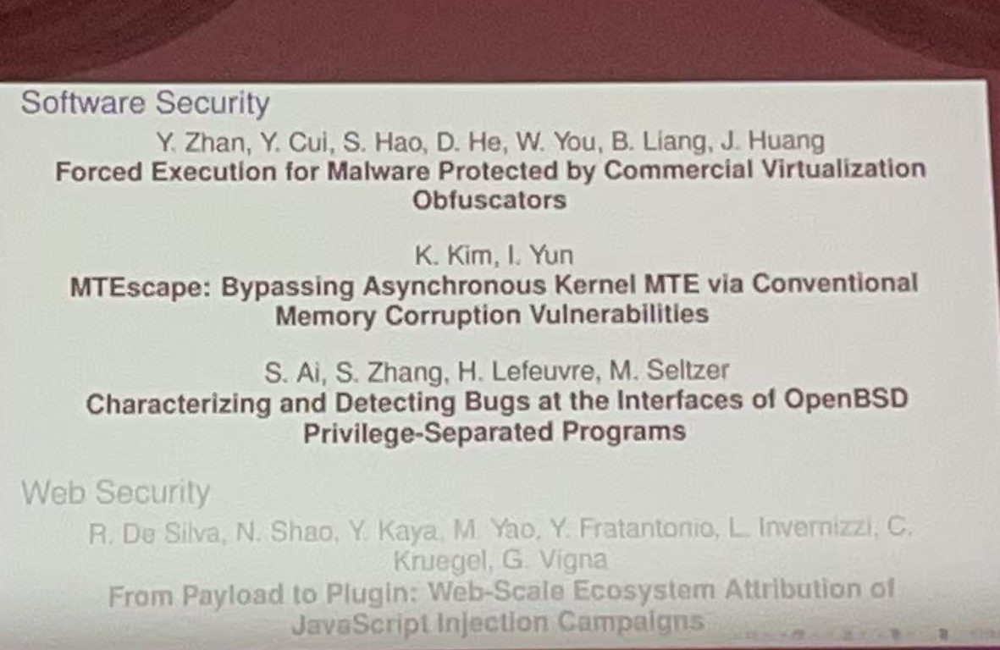
— 软件安全（3 篇）；Web 安全（1 篇）
03
CRYPTO
应用密码学（4 篇）
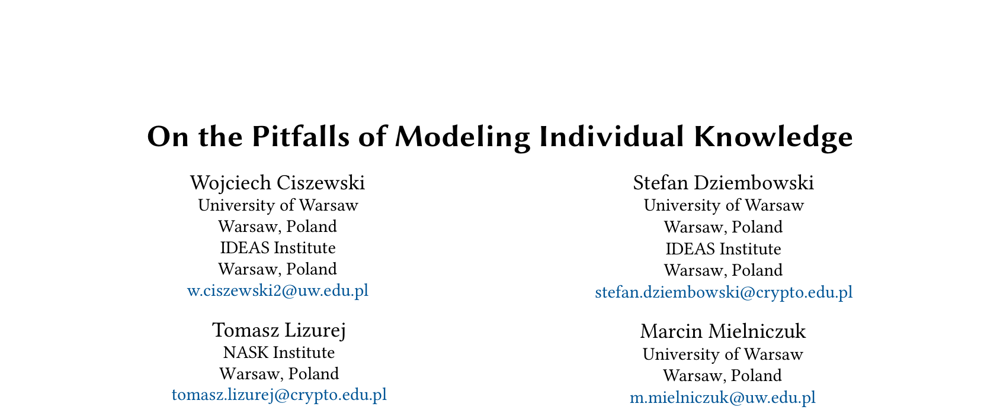
— On the Pitfalls of Modeling Individual Knowledge 论文题头
01
On the Pitfalls of Modeling Individual Knowledge
Wojciech Ciszewski, Stefan Dziembowski, Tomasz Lizurej, Marcin Mielniczuk
University of Warsaw, IDEAS Institute, NASK Institute
有一类密码协议要证明的不只是"我知道某段数据"，而是"这段数据就存在我自己控制的一台机器上"，用来防止把存储或计算外包出去，挖矿领域的"不可外包谜题"也属于这一类。这些协议普遍假设：对很长的消息算哈希，必须一次性整体算完。但现实中的哈希函数（Merkle-Damgård、海绵结构）都能对长输入分段预计算，比特币挖矿的哈希也一样。作者据此对 Miller 等人（CCS 2015）和 Kelkar 等人（CCS 2024）的方案给出了实际攻击，并提出不依赖这条假设的替代构造。
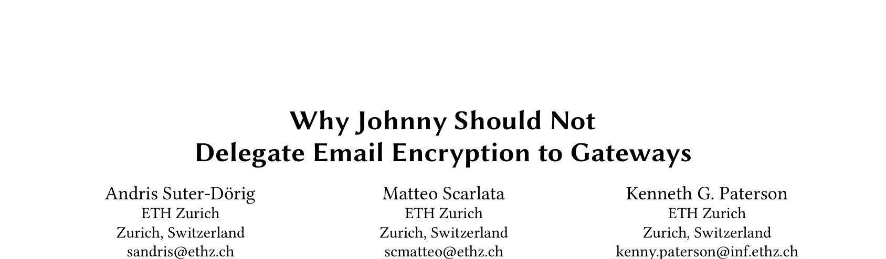
— Why Johnny Should Not Delegate Email Encryption to Gateways 论文题头
02
Why Johnny Should Not Delegate Email Encryption to Gateways
Andris Suter-Dörig, Matteo Scarlata, Kenneth G. Paterson
ETH Zurich
企业里的 S/MIME、PGP 邮件加密，很多是交给服务器端的加密网关统一解密和签名，而不是在每个人的客户端完成。作者系统分析了 SEPPmail、CipherMail、Cisco Email Security Appliance 和 Proton Mail Bridge 四款产品，找出 29 种攻击，可以完整解密邮件，或者让用户误判邮件的真实性。核心原因是：把加解密挪到网关后，邮件客户端原本依赖的安全信号被剥掉了，本以为已经解决的 EFAIL 攻击因此重新可用，解密后的明文还会流经根本没为此设计的中间邮件设施。结论很直接：网关模式破坏了 PGP 和 S/MIME 本来的端到端安全模型。
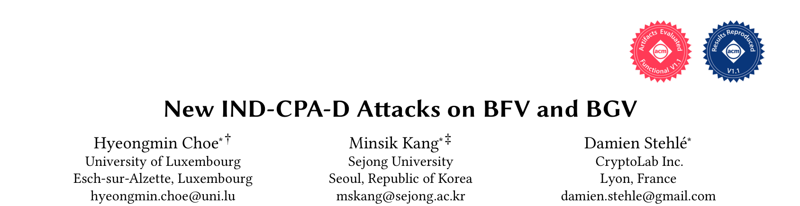
— New IND-CPA-D Attacks on BFV and BGV 论文题头
03
New IND-CPA-D Attacks on BFV and BGV
Hyeongmin Choe, Minsik Kang, Damien Stehlé
University of Luxembourg, Sejong University, CryptoLab Inc.
IND-CPA-D 是全同态加密里比普通 IND-CPA 更强的安全概念，考虑的是攻击者能看到解密结果的场景，门限解密就必须满足它。BFV 和 BGV 两种主流方案在实际部署时，常用一些启发式的噪声上界来保证解密正确。作者给出三种新攻击：把已有的自举失败攻击扩展到 BFV 和 BGV；构造让噪声上界失效的明文；以及让密文乘法的噪声增长超出预期。前两种能恢复私钥，第三种能攻破 IND-CPA-D 的不可区分性。在 OpenFHE 上，第二种攻击几分钟到几小时就能完整恢复私钥。
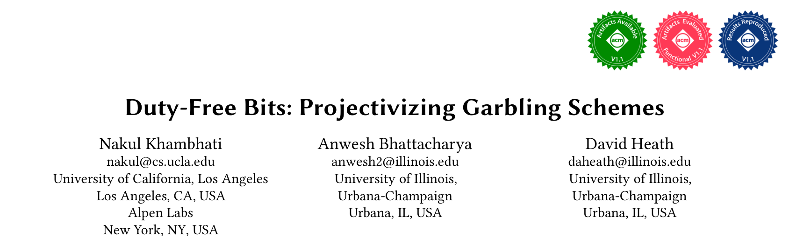
— Duty-Free Bits: Projectivizing Garbling Schemes 论文题头
04
Duty-Free Bits: Projectivizing Garbling Schemes
Nakul Khambhati, Anwesh Bhattacharya, David Heath
University of California, Los Angeles, Alpen Labs, University of Illinois Urbana-Champaign
混淆电路是安全多方计算的基础工具。"投影式"混淆电路按比特编码输入，能直接和不经意传输等简单工具配合，用起来最灵活；而一些在大有限域上工作的高效方案不是投影式的，用途受限。这篇给出一种低成本转换，把这类方案变成投影式，代价只和输入输出标签的规模成正比，标题里的"免税"就是这个意思。应用上，它可以直接替换比特币跨链桥里 BABE 和 Argo MAC 的编码环节，把 BABE 的编码缩小 51 倍、Argo MAC 缩小 23 倍。
04
CHAIN
区块链与分布式系统（2 篇）
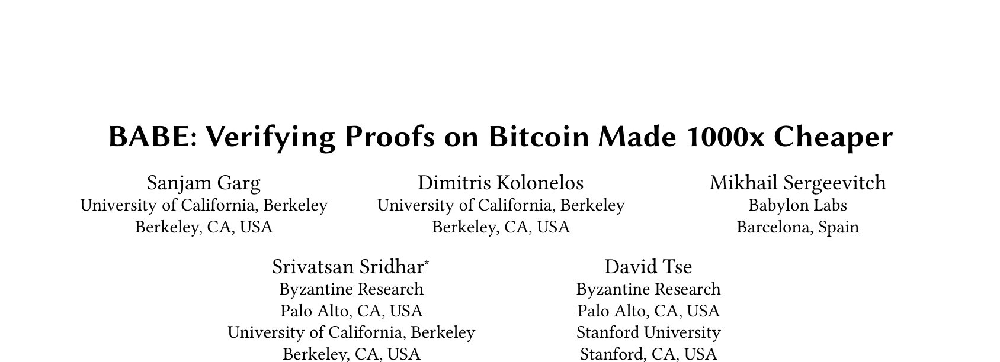
— BABE: Verifying Proofs on Bitcoin Made 1000x Cheaper 论文题头
05
BABE: Verifying Proofs on Bitcoin Made 1000x Cheaper
Sanjam Garg, Dimitris Kolonelos, Mikhail Sergeevitch, Srivatsan Sridhar, David Tse
University of California, Berkeley, Babylon Labs, Byzantine Research, Stanford University
让比特币能验证简洁证明（SNARK），是比特币扩容和跨链的老难题，因为比特币脚本表达能力弱、区块空间小。现有方案 BitVM2 在出现争议时链上手续费很高；BitVM3 用混淆电路把大部分验证搬到链下，省了链上成本，但每个混淆电路有 42 GiB，链下存储和准备成本巨大。BABE 用一种针对线性配对关系的见证加密来验证 Groth16 证明，再配一个高效的两方计算处理非线性部分，保留了 BitVM3 的链上节省，同时把链下存储和准备成本降低了三个数量级，标题里的"1000 倍"指的就是这部分。
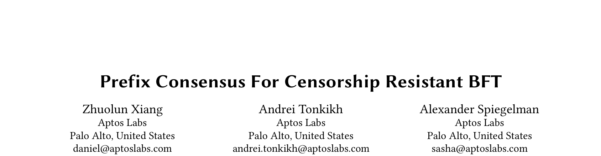
— Prefix Consensus For Censorship Resistant BFT 论文题头
06
Prefix Consensus For Censorship Resistant BFT
Zhuolun Xiang, Andrei Tonkikh, Alexander Spiegelman
Aptos Labs
区块链的 BFT 共识普遍有个弱点：出块的 leader 可以选择性地把某些交易排除在外，抗审查能力很弱。作者定义了一个新的共识抽象"前缀共识"，并在此基础上构建了无 leader、多提案者的 BFT 状态机复制协议，每个验证者在每个 slot 都能提案，网络稳定之后最多只有 f 个 slot 可能被审查，提交延迟摊下来是 4 轮。论文还给出了相应的轮数下界。这是全部获奖论文里唯一一篇作者全部来自企业的工作；前缀共识的定义，受到同一团队此前 Raptr 协议里基于前缀的机制启发。
05
HARDWARE
硬件、侧信道与信息物理系统（2 篇）
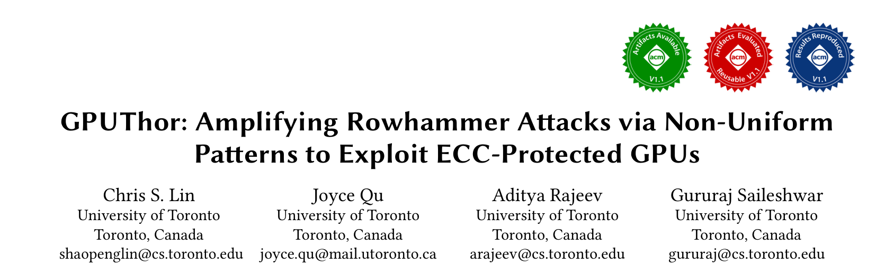
— GPUThor 论文题头
07
GPUThor: Amplifying Rowhammer Attacks via Non-Uniform Patterns to Exploit ECC-Protected GPUs
Chris S. Lin, Joyce Qu, Aditya Rajeev, Gururaj Saileshwar
University of Toronto
GPU 的显存同样会被 Rowhammer 攻击：反复快速访问某几行内存，让相邻存储单元的比特翻转。但以往的 GPU 攻击只能翻转几十到几百个比特，比 CPU 上的攻击少好几个数量级，实际威胁有限。原因是它们对攻击行和诱饵行"一视同仁"地敲击，强度不够。GPUThor 逆向了 GPU 的内存访问合并机制，做出"非均匀"的敲击模式，集中火力打攻击行，并卡准内存刷新的时机绕过芯片内的缓解措施。结果是在多款 NVIDIA 显卡（A4000 到 A6000）上比特翻转数量比以往多 500 到 23500 倍，接近 CPU 攻击的水平，并且首次在开启 ECC 的 GPU 上造成无法纠正的多比特翻转，让拒绝服务和提权攻击变得可行。
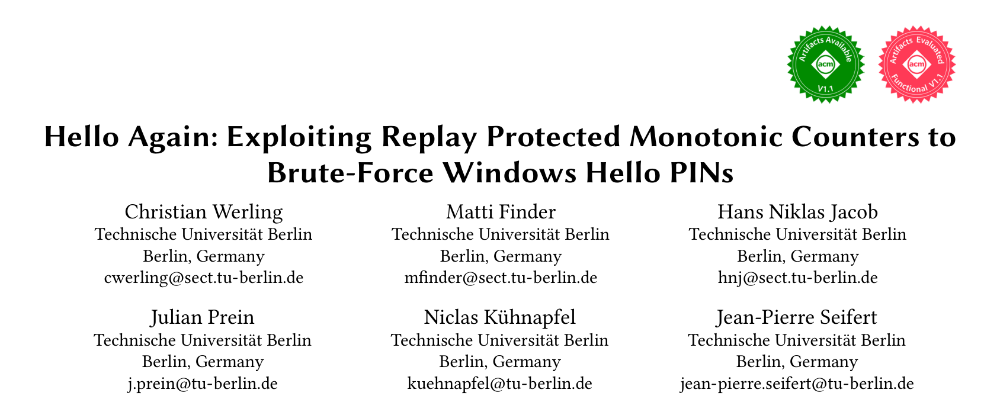
— Hello Again 论文题头
08
Hello Again: Exploiting Replay Protected Monotonic Counters to Brute-Force Windows Hello PINs
Christian Werling, Matti Finder, Hans Niklas Jacob, Julian Prein, Niclas Kühnapfel, Jean-Pierre Seifert
Technische Universität Berlin
Windows Hello 允许用短到 4 位的数字 PIN 登录，靠的是 TPM 的防暴力破解机制：输错太多次就锁定。现在主流 x86 平台用的是固件 TPM，锁定状态存在 SPI 闪存里，新平台再用闪存芯片上的"防重放单调计数器"（RPMC）防止状态被回滚。作者用低成本的硬件插件分析了实际出货设备上的 RPMC，发现两个致命问题：华邦（Winbond）SPI 闪存在电压毛刺下会泄露 HMAC 密钥，可以任意伪造计数；AMD 的控制器不检查计数器是否真的递增了，可以悄悄拦掉递增。两条路都能把 TPM 的锁定计数回滚。作者在上锁、加密的真机上端到端验证了 Windows Hello PIN 和 BitLocker PIN 的暴力破解，4 位 Hello PIN 40 小时内就能试出来。
06
FORMAL
形式化方法与编程语言（1 篇）
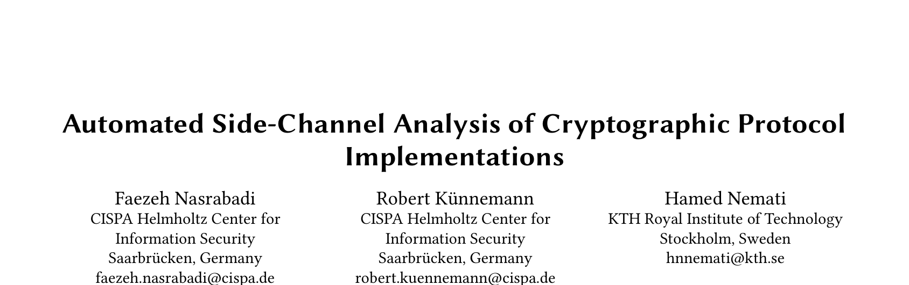
— Automated Side-Channel Analysis of Cryptographic Protocol Implementations 论文题头
09
Automated Side-Channel Analysis of Cryptographic Protocol Implementations
Faezeh Nasrabadi, Robert Künnemann, Hamed Nemati
CISPA Helmholtz Center for Information Security, KTH Royal Institute of Technology
密码协议的形式化验证通常在抽象的符号模型上做，看不到编译后的代码，也看不到微架构侧信道，所以"验证过的规范"和"实际跑的程序"之间有一道缝。这篇做了一条工具链：从真实二进制里截取与协议相关的代码，提升到中间表示，按常数时间和 Spectre 类推测执行的泄露模型做插桩和符号执行，再把得到的轨迹翻译给 Tamarin、ProVerif、DeepSec 等协议验证器。案例里，作者直接从 WhatsApp 桌面版的二进制提取了会话管理和双棘轮组件的模型，并发现了一个可用于推断社交关系图的指令缓存侧信道；对电子护照的 BAC 协议，也在微架构观测下复现了已知的不可关联性问题。
07
ML
机器学习与安全（3 篇）
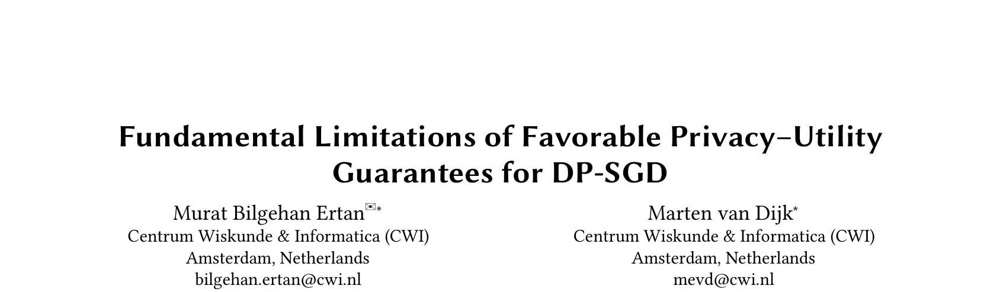
— Fundamental Limitations of Favorable Privacy-Utility Guarantees for DP-SGD 论文题头
10
Fundamental Limitations of Favorable Privacy-Utility Guarantees for DP-SGD
Murat Bilgehan Ertan, Marten van Dijk
Centrum Wiskunde & Informatica (CWI)
DP-SGD 是差分隐私训练的主流方法，但在最坏情况的攻击者模型下它到底能做到什么程度，一直没被讲清楚。作者在 f-差分隐私框架下分析了单轮、打乱采样的 DP-SGD，证明了一个硬约束：要想让攻击者的优势足够小（隐私强），高斯噪声就必须超过一个下界，而这个下界直接限制了模型效用。也就是说，在标准的最坏情况假设下，DP-SGD 无法同时做到强隐私和高效用。这个噪声门槛理论上会随训练步数增加而消失，但收敛极慢，实际训练规模下仍然很大；结论对泊松采样同样成立，实验也确认了相应的准确率损失。
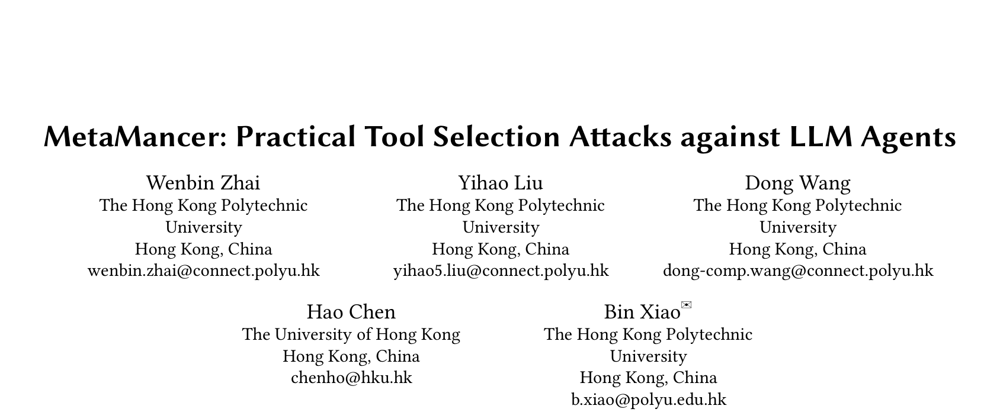
— MetaMancer 论文题头
11
MetaMancer: Practical Tool Selection Attacks against LLM Agents
Wenbin Zhai, Yihao Liu, Dong Wang, Hao Chen, Bin Xiao
The Hong Kong Polytechnic University, The University of Hong Kong
Agent 越来越依赖第三方工具，"选哪个工具"就成了一道安全边界。攻击者只要改写自己工具的元数据（名称、描述、参数说明），就能让 Agent 在一堆候选里选中恶意工具，进而劫持后续执行，既不需要控制用户的提问，也不用接触受害系统。以往的攻击在现实条件下效果有限，因为攻击者要在严格的黑盒、只能迁移的设定下改写完整元数据，还得同时兼顾有效、隐蔽和稳健。MetaMancer 把这个问题建模成带语义约束的双层优化，用多 Agent 在替代生态里估计效果和约束再统一更新。在 ToolBench 和 MCPTools 上（20 个任务、9729 个候选工具、8 个目标模型、6 种防御），端到端攻击成功率 92.7% 和 93.8%，加上防御后仍有 91.2% 和 92.2%，比此前最好的攻击高出 50 个百分点以上。作者也提出了一个轻量防御 CVR：按必填参数界定工具的核心能力，重建元数据，能把成功率压到 18% 左右。
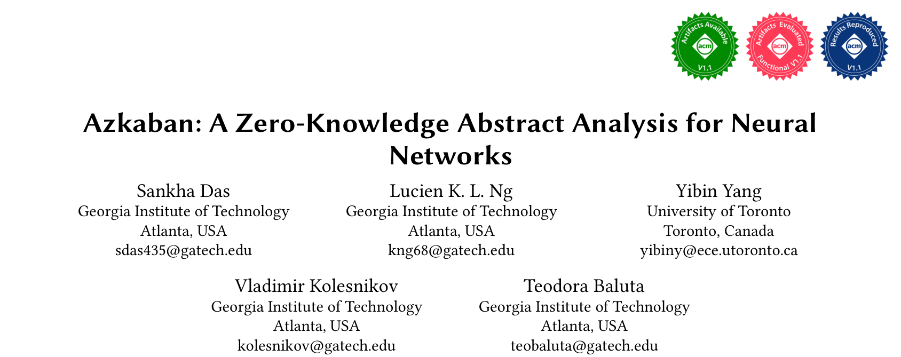
— Azkaban 论文题头
12
Azkaban: A Zero-Knowledge Abstract Analysis for Neural Networks
Sankha Das, Lucien K. L. Ng, Yibin Yang, Vladimir Kolesnikov, Teodora Baluta
Georgia Institute of Technology, University of Toronto
用零知识证明来认证神经网络的性质（比如对抗鲁棒性、公平性），可以在不公开模型的前提下让别人相信认证结果。问题在于，认证算法是按实数设计的，而零知识证明只能在有限域上模拟定点数运算，舍入误差会被放大，以往的协议因此存在可靠性漏洞，可能认证出并不成立的结论。Azkaban 设计了在有限域上可靠的区间分析算子，包括适合零知识证明的内积和除法，同时防止非线性激活泄露隐私，支持全连接和卷积网络。它在个体公平性认证上比现有最好的协议快两个数量级，能处理更大的模型，也是首个零知识鲁棒性认证方案。
08
NETWORK
网络安全（2 篇）
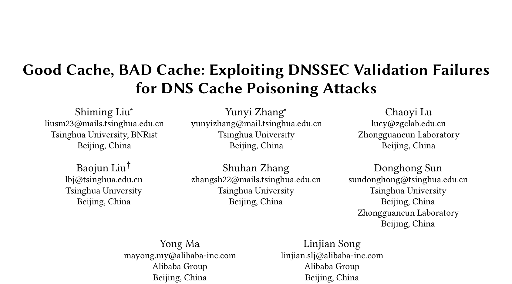
— Good Cache, BAD Cache 论文题头
13
Good Cache, BAD Cache: Exploiting DNSSEC Validation Failures for DNS Cache Poisoning Attacks
Shiming Liu, Yunyi Zhang, Chaoyi Lu, Baojun Liu, Shuhan Zhang, Donghong Sun, Yong Ma, Linjian Song
Tsinghua University, Zhongguancun Laboratory, Alibaba Group
DNSSEC 用数字签名校验 DNS 记录，一直被视为防 DNS 缓存投毒的最佳实践。这篇提出的 BadDNS 攻击恰恰利用了 DNSSEC 的验证失败：有些解析器在某个域名验证失败后，仍把响应里的记录存进一种叫"BAD cache"的缓存，之后的解析又错误地用上了这些没通过验证的记录。作者审查了 6 款主流 DNS 软件，确认其中 3 款可被利用，包括 PowerDNS 和 Microsoft DNS；测量发现30 万个做 DNSSEC 验证的开放解析器中约 16.86% 受影响，10 家公共 DNS 服务（含 OpenDNS、Quad9）也在其列，另有 26930 台权威服务器受影响。漏洞已负责任披露，7 家厂商给了积极回应，部分正在采纳修复方案。
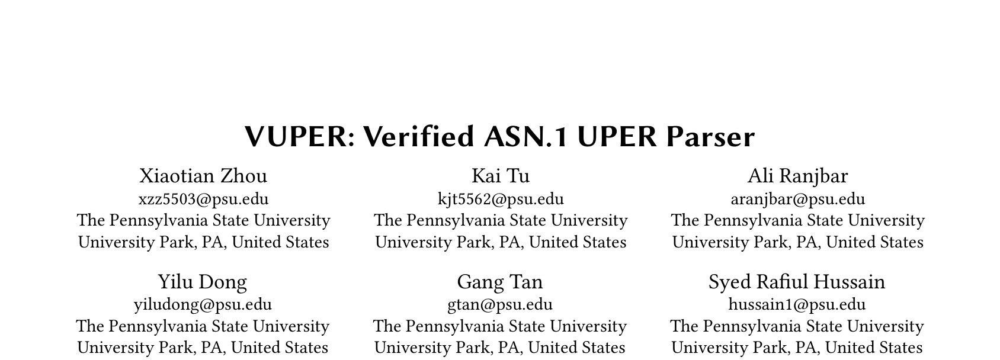
— VUPER: Verified ASN.1 UPER Parser 论文题头
14
VUPER: Verified ASN.1 UPER Parser
Xiaotian Zhou, Kai Tu, Ali Ranjbar, Yilu Dong, Gang Tan, Syed Rafiul Hussain
The Pennsylvania State University
ASN.1 是广泛使用的接口描述语言，其中 UPER 编码在 5G 蜂窝网络和车联网（V2X）等安全关键场景里很常见，解析器一旦出错就是攻击面。VUPER 先形式化定义了"比特级精确"的解析器，证明解析器和序列化器之间的往返一致性，并兼顾 ASN.1 的前后向兼容特性；再实现并验证了基本类型和结构的解析组合子，配一个把 ASN.1 定义直接编译成已验证解析器的编译器。拿它当测试基准，作者测了 7 个开源和 4 个商业 ASN.1 解析器，发现了 20 类不一致，并演示了利用这些解析漏洞的具体攻击。
09
PRIVACY
隐私与匿名（1 篇）
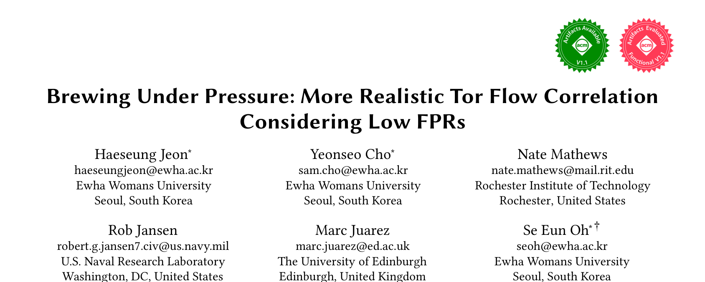
— Brewing Under Pressure 论文题头
15
Brewing Under Pressure: More Realistic Tor Flow Correlation Considering Low FPRs
Haeseung Jeon, Yeonseo Cho, Nate Mathews, Rob Jansen, Marc Juarez, Se Eun Oh
Ewha Womans University, Rochester Institute of Technology, U.S. Naval Research Laboratory, The University of Edinburgh
流量关联攻击通过把 Tor 线路两端的流量对上号来破坏匿名性。以往的关联模型大多在人工构造的数据集上评估，换到稀疏、多变的真实 Tor 流量上效果会大幅下降。作者构建了两个更真实的数据集，其中一个是直接从真实 Tor 网络采集的带标注流量对，并提出了 ESPRESSO 攻击，用核密度估计做按密度划分的窗口表示，适应不同流量规模。结果是：在误报率 10⁻⁵ 时仍有 88% 的检出率，而此前最好的 DeepCoFFEA 在同样误报率下几乎为零；只观察到 500 个数据单元、并发连接很多时依然有效。作者的结论是，流量关联仍然是 Tor 迫在眉睫的严重威胁。
10
MEASURE
安全可用性与测量（4 篇）
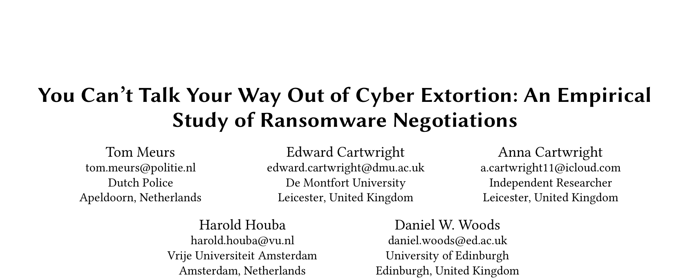
— You Can't Talk Your Way Out of Cyber Extortion 论文题头
16
You Can't Talk Your Way Out of Cyber Extortion: An Empirical Study of Ransomware Negotiations
Tom Meurs, Edward Cartwright, Anna Cartwright, Harold Houba, Daniel W. Woods
Dutch Police, De Montfort University, Independent Researcher, Vrije Universiteit Amsterdam, University of Edinburgh
勒索软件的平均赎金从 2018 年起大幅上涨，为什么攻击者能要到越来越多的钱？作者把勒索谈判拆成六个阶段建模，用两份数据检验技术因素（备份、数据安全）、经济因素（保险、外部顾问）和谈判策略各自的影响：461 起报到警方的勒索案件（2019 到 2023 年）和 237 份公开的谈判记录元数据。结论和标题一致：付不付赎金主要取决于受害者早期的处境，而不是谈判后期的砍价。有完整可恢复的备份，会大幅降低谈判和支付的概率；受害者营收越高，越可能进入谈判并拿到折扣；谈判拖得越久越可能打折，但支付率反而更低；没有证据表明网络保险会直接提高支付。作者建议把精力放在备份流程上，而不是谈判技巧。第一作者来自荷兰警方。
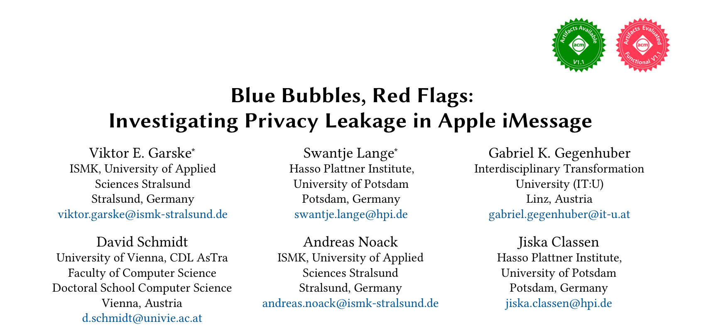
— Blue Bubbles, Red Flags 论文题头
17
Blue Bubbles, Red Flags: Investigating Privacy Leakage in Apple iMessage
Viktor E. Garske, Swantje Lange, Gabriel K. Gegenhuber, David Schmidt, Andreas Noack, Jiska Classen
University of Applied Sciences Stralsund, Hasso Plattner Institute, University of Potsdam, Interdisciplinary Transformation University (IT:U), University of Vienna
iMessage 用上了后量子加密，约 14 亿活跃用户，但它在加密之外的协议行为几乎没有公开研究。这是对 iMessage 协议实现的首次系统性隐私分析。作者发现：攻击者可以识别对方每台设备的型号和系统版本，为后续定向攻击做侦察；可以针对同一用户的某一台设备单独发起攻击；送达回执能暴露对方是否在线和大致位置，附件上传也能推出位置。所有这些攻击都是静默的，对方毫无察觉。
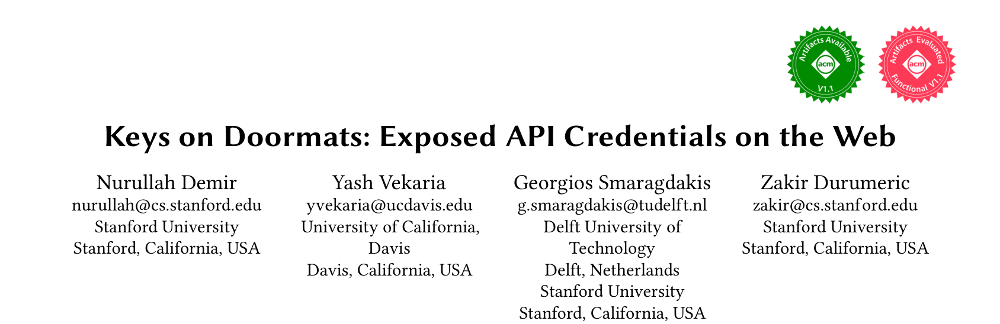
— Keys on Doormats 论文题头
18
Keys on Doormats: Exposed API Credentials on the Web
Nurullah Demir, Yash Vekaria, Georgios Smaragdakis, Zakir Durumeric
Stanford University, University of California, Davis, Delft University of Technology
API 密钥一旦公开暴露，攻击者就能借它访问云服务、支付服务等第三方服务。作者渲染并分析了 1000 万个网站，找到可用于 14 家服务商的 1748 个暴露凭据，涉及全球性银行和核心基础设施提供商。关键发现是，这些泄露大多是静态分析看不到的：62% 的 JavaScript 泄露只出现在编译后的部署包里，16% 通过引入的第三方资源动态传播；纵向跟踪显示，这些凭据往往暴露数月到数年都没被处理。作者已做负责任披露，并给出了加固 Web 部署流水线的建议。
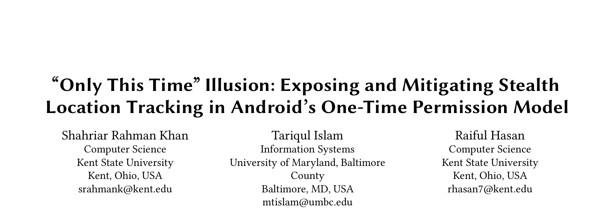
— "Only This Time" Illusion 论文题头
19
"Only This Time" Illusion: Exposing and Mitigating Stealth Location Tracking in Android's One-Time Permission Model
Shahriar Rahman Khan, Tariqul Islam, Raiful Hasan
Kent State University, University of Maryland, Baltimore County
安卓的"仅此一次"权限会在应用不再使用时自动收回定位、相机、麦克风等权限。为了不打断导航这类正在进行的任务，系统在应用运行前台服务时会暂停这个收回计时，理由是前台服务必须显示常驻通知，用户看得见。漏洞就出在这里：应用可以启动前台服务却故意不申请显示通知的权限，进入"隐身状态"，系统照样保活并无限延长那次一次性权限，实现持续的静默后台追踪。作者动态测量了 Google Play 上的 500 个应用，发现 19.6%（98 个）在主动触发这种状态，主要由激进的商业追踪 SDK 驱动。作者还在 AOSP 中实现了系统级修复。
11
SOFTWARE
软件安全（3 篇）
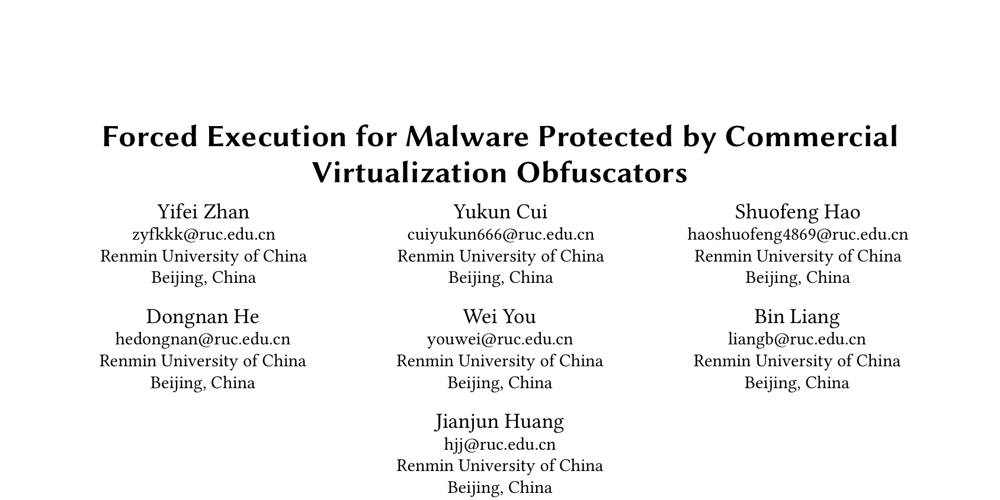
— Forced Execution for Malware Protected by Commercial Virtualization Obfuscators 论文题头
20
Forced Execution for Malware Protected by Commercial Virtualization Obfuscators
Yifei Zhan, Yukun Cui, Shuofeng Hao, Dongnan He, Wei You, Bin Liang, Jianjun Huang
Renmin University of China
"强制执行"是挖掘恶意软件隐藏行为的有效手段：强行改变条件跳转的结果，把平时走不到的分支跑出来。但现在的恶意软件越来越多用 VMProtect、Themida 这类商业虚拟化混淆器保护，原生指令被变成自定义的虚拟字节码在运行时解释执行，原生的条件跳转就看不见了，传统工具基本失效。这篇的思路是不做完整的去混淆，而是利用一个观察：虚拟化为了保持原有语义，实现条件跳转时必须遵循特定的数据流和控制流，据此只定位负责"虚拟化条件跳转"的那些指令，再操纵它们模拟强制执行。在有真值的基准上，识别召回率 100%、精确率接近 100%，适用于多款主流混淆器；在真实恶意样本上，暴露出的行为数是普通执行的 10.97 倍、传统强制执行的 1.89 倍。
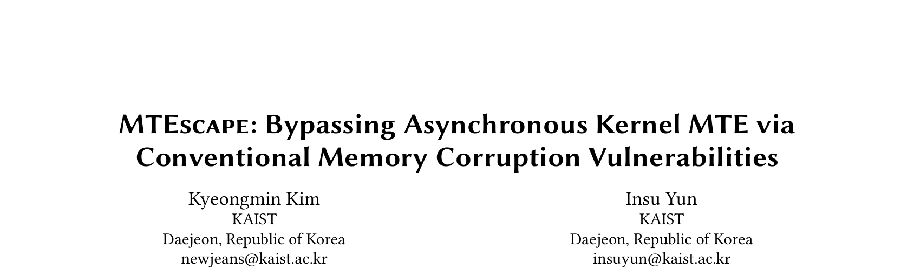
— MTEscape 论文题头
21
MTEscape: Bypassing Asynchronous Kernel MTE via Conventional Memory Corruption Vulnerabilities
Kyeongmin Kim, Insu Yun
KAIST
ARM 的内存标记扩展（MTE）用硬件标记来检测缓冲区溢出、释放后使用等常见内存漏洞，已经部署在现代内核里。它的异步模式出于性能考虑，把标记检查推迟到上下文切换时才做，这个窗口一直被认为只是理论上的弱点。MTEscape 首次在 Linux 内核里证明了这个窗口可被利用：就在检查生效之前，用一个普通的内存破坏漏洞改掉 MTE 的"关闭开关"变量，让标记错误不再被处理。为了在极短的时间窗口内完成，作者借助特定的内核对象一步完成漏洞转化，并用稳定竞态的技术提高成功率。在合成漏洞和 10 个真实内核 CVE 上全部绕过成功，作者也提出了几乎无性能开销的缓解措施。
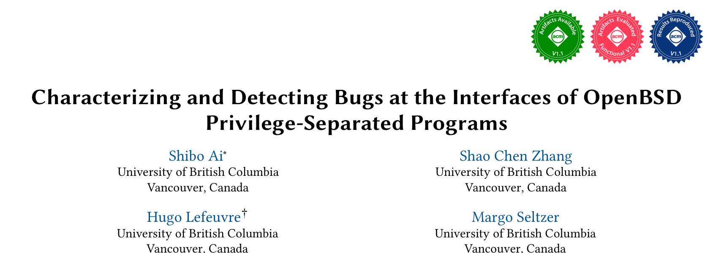
— Characterizing and Detecting Bugs at the Interfaces of OpenBSD Privilege-Separated Programs 论文题头
22
Characterizing and Detecting Bugs at the Interfaces of OpenBSD Privilege-Separated Programs
Shibo Ai, Shao Chen Zhang, Hugo Lefeuvre, Margo Seltzer
University of British Columbia
权限分离把一个程序拆成若干只拿最小权限的隔离部件，一个部件被攻破也不至于殃及全局。但部件之间的通信接口必须仔细加固，否则就会出现"部件接口漏洞"，让拆分形同虚设。作者用人工分析、模糊测试和大模型 Agent 结合的方式，审计了 OpenBSD 里 25 个常用的权限分离程序，找出 81 个接口漏洞，有的存在了十年以上，后果从内存破坏、信息泄露到任意代码执行。研究也肯定了 OpenBSD 的做法，比如不用共享内存直接消灭了一整类问题；但结论是，即便是安全专家拆分的程序，也反复出现同样的高危模式，需要对部件接口做清晰乃至形式化的规范。
12
WEB
Web 安全（1 篇）
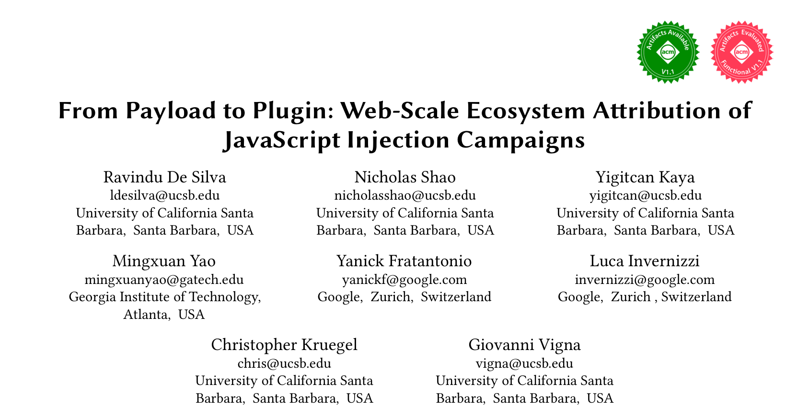
— From Payload to Plugin 论文题头
23
From Payload to Plugin: Web-Scale Ecosystem Attribution of JavaScript Injection Campaigns
Ravindu De Silva, Nicholas Shao, Yigitcan Kaya, Mingxuan Yao, Yanick Fratantonio, Luca Invernizzi, Christopher Kruegel, Giovanni Vigna
University of California Santa Barbara, Georgia Institute of Technology, Google
外部安全分析人员没有网站后台权限，只能从前端看到被注入的恶意 JavaScript，却不知道是哪个有漏洞的插件让攻击者进来的。结果是站长删掉了看得见的恶意代码，漏洞还在，很快又被感染。作者对 85 万个 WordPress 站点连续监测 84 天，用前后快照的 JavaScript 差异找出注入，聚类成攻击活动，再比较受害站点和未受害站点的插件分布，把每个活动追溯到具体的插件及版本。共发现 20 个攻击活动、涉及 1160 个站点，其中 18 个在研究期间完全没被 VirusTotal 检出；顺着线索还挖出了 3 个热门插件的新漏洞，已通过 Wordfence 协调披露。
13
TAKEAWAYS
几点观察
超过一半在拆"已经防住了"的假设
23 篇里至少有 12 篇，攻击或质疑的是一个大家默认已经安全的机制：DNSSEC 本是防投毒的最佳实践（Good Cache, BAD Cache），MTE 本是内存安全的硬件防线（MTEscape），ECC 本以为能挡住 GPU Rowhammer（GPUThor），RPMC 本是防回滚的标准机制（Hello Again），EFAIL 本以为已经修好了（Johnny），"仅此一次"权限本是限制追踪的设计（Only This Time），iMessage 本以加密安全著称（Blue Bubbles），OpenBSD 的权限分离出自安全专家之手。密码学方向也一样：哈希的建模假设（Pitfalls）、同态加密的噪声上界（IND-CPA-D）、零知识认证的可靠性（Azkaban）、DP-SGD 的隐私效用承诺（DP-SGD 那篇）。评委显然偏爱"把一个被当成定论的防御重新打开"的工作。
获奖的测量研究都落到了真实世界
测量类论文的共同点是能拿出"真实世界里有多少"：30 万解析器中 16.86% 受影响，1000 万网站中 1748 个泄露凭据，500 个应用中 98 个在滥用权限，85 万 WordPress 站点中 20 个攻击活动，461 起警方案件。几乎每篇都伴随负责任披露、厂商回应或系统级修复。
AI 方向获奖很少，Agent 只有一篇
机器学习方向的 3 篇里，DP-SGD 和 Azkaban 都偏理论和密码学，真正与大模型应用相关的只有 MetaMancer 一篇。它针对的工具选择环节，和 MCP 生态里的工具投毒是同一类问题：Agent 选工具时看的是攻击者能随意填写的描述。
第一作者单位：美国 8 篇，欧洲 8 篇
按第一作者单位粗略统计，美国 8 篇，欧洲 8 篇（德国 3 篇，荷兰 2 篇，瑞士、波兰、卢森堡各 1 篇），中国 3 篇（清华、人大、香港理工），韩国 2 篇，加拿大 2 篇。企业和机构的身影也不少：Aptos、Google、阿里、CryptoLab，以及第一作者来自荷兰警方的勒索软件研究。